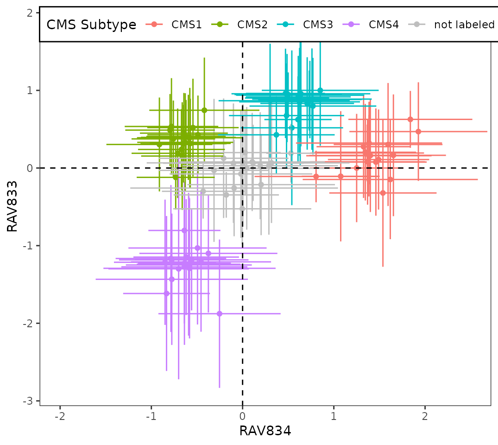
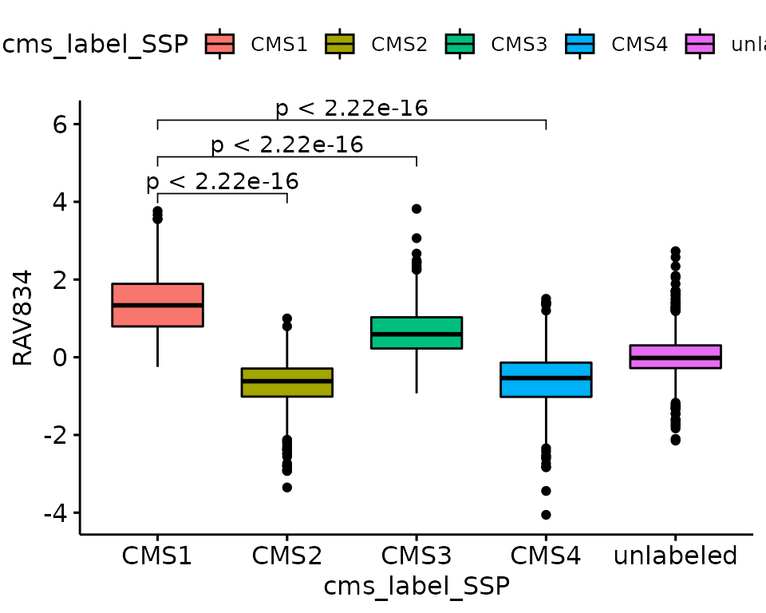
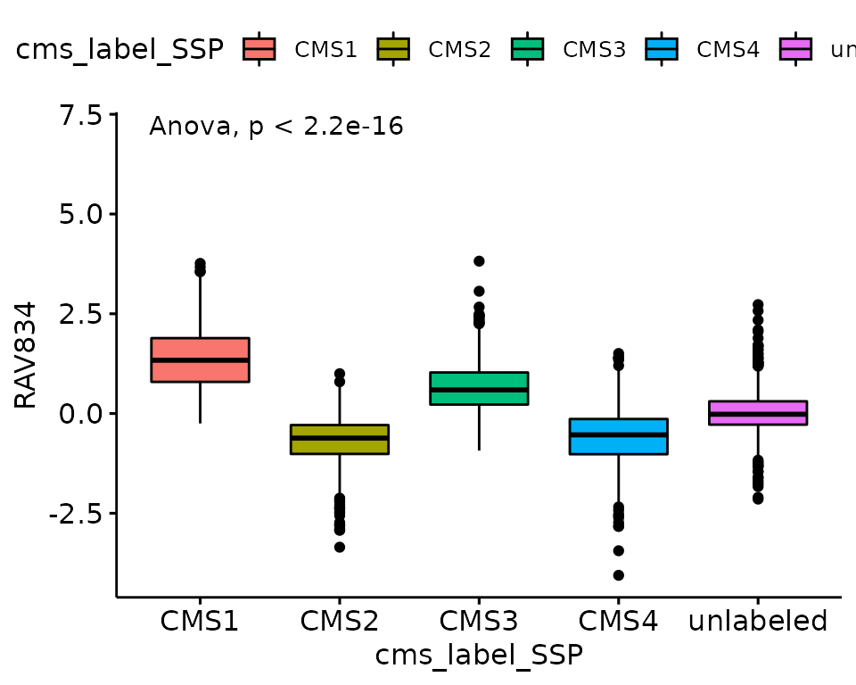
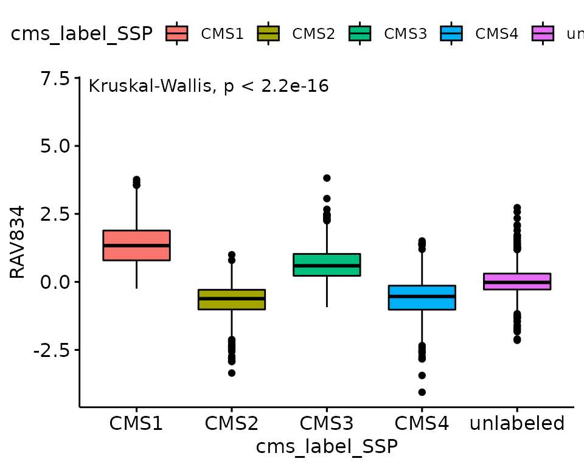

Find the signature using metadata
Sehyun Oh
2020-12-17
Source:vignettes/CRC/metadata_based_search.Rmd
metadata_based_search.RmdSetup
RAVmodel
## class: PCAGenomicSignatures
## dim: 13934 4764
## metadata(7): cluster size ... updateNote version
## assays(1): model
## rownames(13934): CASKIN1 DDX3Y ... CTC-457E21.9 AC007966.1
## rowData names(0):
## colnames(4764): RAV1 RAV2 ... RAV4763 RAV4764
## colData names(4): RAV studies silhouetteWidth gsea
## trainingData(2): PCAsummary MeSH
## trainingData names(536): DRP000987 SRP059172 ... SRP164913 SRP188526
## [1] "536 refine.bio studies/ top 90% varying genes/ GSEA with MSigDB C2"Processing datasets
Get phenotype data
Combine all the phenotype data from CRC validation datasets.
## phenotype tables combined
pdata_df <- setNames %>% lapply(function(set) {
eSet <- get(set)
pdata <- pData(eSet)
eSet_tmp <- eSet[, pdata$sample_type %in% "tumor"]
pdata_tmp <- pData(eSet_tmp)
ind_rm <- grep("CRIS_", colnames(pdata_tmp))
if (length(ind_rm) != 0) {pdata_tmp <- pdata_tmp[,-ind_rm]}
return(pdata_tmp)
}) %>% Reduce('rbind', .)Get expression data
Combine all expression profiles from CRC validation datasets, subset with the common genes among them.
## common genes between all validation datasets
all_genes <- list()
for (set in setNames) {
eSet <- get(set)
exprs <- exprs(eSet) %>% rmNaInf
all_genes[[set]] <- rownames(exprs)
}
cg <- Reduce(intersect, all_genes)
## expression matrix combined
exprs_df <- setNames %>% lapply(function(set) {
eSet <- get(set)
pdata <- pData(eSet)
eSet_tmp <- eSet[cg, pdata$sample_type %in% "tumor"]
exprs_tmp <- exprs(eSet_tmp) %>% rmNaInf
exprs_tmp <- apply(exprs_tmp, 1, function(x) x - mean(x)) %>% t
return(exprs_tmp)
}) %>% Reduce('cbind', .) # 8219 genes x 3567 samplesCalculate Score
Calculate score and combine it with phenotype data.
sampleScore <- calculateScore(exprs_df, RAVmodel)
data_all <- cbind(sampleScore, pdata_df)Multivariable
Here, I’m using 4 CMS subtypes of CRC validation datasets as an example of identifying signifcant RAVs using discrete, multivariable metdata.
ANOVA
f.stat.all <- sapply(seq_len(ncol(RAVmodel)), function(x) {
res.aov <- aov(data_all[,x] ~ data_all$cms_label_SSP)
f.stat <- summary(res.aov)[[1]][1,4] # extract F-statistics from ANOVA
return(f.stat)
})
names(f.stat.all) <- paste0("RAV", seq_len(ncol(RAVmodel)))
head(f.stat.all[order(f.stat.all, decreasing = TRUE)])
## RAV834 RAV833 RAV861 RAV188 RAV2432 RAV579
## 1216.5445 834.3780 742.6224 709.8732 656.5008 642.1502Kruskal-Wallis Rank Sum Test
Normality assumption is not met. Below example is a Q-Q plot from RAV834.

Try Kruskal-Wallis Rank Sum Test
# Kruskal-Wallis Rank Sum Test
# a non-parametric alternative to one-way ANOVA = when normality assumption is not met
kw.chi.sqr <- sapply(seq_len(ncol(RAVmodel)), function(x) {
kw.test <- kruskal.test(data_all[,x] ~ data_all$cms_label_SSP)
kw.stat <- kw.test$statistic
return(kw.stat)
})
names(kw.chi.sqr) <- paste0("RAV", seq_len(ncol(RAVmodel)))
head(kw.chi.sqr[order(kw.chi.sqr, decreasing = TRUE)])
## RAV834 RAV833 RAV188 RAV579 RAV657 RAV1957
## 2146.136 1831.683 1829.326 1775.702 1750.150 1693.344CMS-associated RAVs
Top 2 RAVs (834 and 833) are same from both ANOVA and Kruskal-Wallis Rank Sum Test.
sampleScore1 <- 834
sampleScore2 <- 833
source("R/Fig4A_plotting.R", print.eval = TRUE)
Plots with different mean comparing methods.
## t.test for a few pairs
my_comparisons <- list(c("CMS1", "CMS2"),c("CMS1", "CMS3"),c("CMS1", "CMS4"))
ggboxplot(data_all, x = "cms_label_SSP", y = "RAV834", fill = "cms_label_SSP") +
stat_compare_means(comparisons = my_comparisons, method = "t.test", aes(label = ..p.adj..))## Warning: Using `as.character()` on a quosure is deprecated as of rlang 0.3.0.
## Please use `as_label()` or `as_name()` instead.
## This warning is displayed once per session.
## ANOVA
ggboxplot(data_all, x = "cms_label_SSP", y = "RAV834", fill = "cms_label_SSP") +
stat_compare_means(method = "anova", label.y = 7) # Add global p-value
## Kruskal-Wallis Rank Sum Test
ggboxplot(data_all, x = "cms_label_SSP", y = "RAV834", fill = "cms_label_SSP") +
stat_compare_means(method = 'kruskal.test', label.y = 7) # Add global p-value
Binary variables
We ran t.test between the below clinical variables and all sample scores. The test results were ordered based on p-value and top 6 of them are printed.
vars <- c("msi", "summarylocation", "summarygrade", "summarystage")MSI
## RAV834 RAV2013 RAV3599 RAV420 RAV2012 RAV517
## 3.587747e-99 6.819382e-83 2.164587e-75 9.580321e-61 4.124044e-57 6.586642e-56Location
## RAV834 RAV4350 RAV2096 RAV2746 RAV2012 RAV2116
## 5.224891e-18 4.082548e-14 5.568131e-14 1.420074e-13 1.894671e-13 3.407322e-13Session Info
sessionInfo()
## R version 4.0.3 (2020-10-10)
## Platform: x86_64-pc-linux-gnu (64-bit)
## Running under: Ubuntu 18.04.5 LTS
##
## Matrix products: default
## BLAS: /usr/lib/x86_64-linux-gnu/openblas/libblas.so.3
## LAPACK: /usr/lib/x86_64-linux-gnu/libopenblasp-r0.2.20.so
##
## locale:
## [1] LC_CTYPE=en_US.UTF-8 LC_NUMERIC=C
## [3] LC_TIME=en_US.UTF-8 LC_COLLATE=en_US.UTF-8
## [5] LC_MONETARY=en_US.UTF-8 LC_MESSAGES=en_US.UTF-8
## [7] LC_PAPER=en_US.UTF-8 LC_NAME=C
## [9] LC_ADDRESS=C LC_TELEPHONE=C
## [11] LC_MEASUREMENT=en_US.UTF-8 LC_IDENTIFICATION=C
##
## attached base packages:
## [1] parallel stats4 stats graphics grDevices utils datasets
## [8] methods base
##
## other attached packages:
## [1] dplyr_1.0.2 ggpubr_0.4.0
## [3] ggplot2_3.3.2 GenomicSuperSignaturePaper_0.0.3
## [5] GenomicSuperSignature_0.0.6 SummarizedExperiment_1.20.0
## [7] Biobase_2.50.0 GenomicRanges_1.42.0
## [9] GenomeInfoDb_1.26.2 IRanges_2.24.1
## [11] S4Vectors_0.28.1 BiocGenerics_0.36.0
## [13] MatrixGenerics_1.2.0 matrixStats_0.57.0
## [15] BiocStyle_2.18.1
##
## loaded via a namespace (and not attached):
## [1] bitops_1.0-6 fs_1.5.0 bit64_4.0.5
## [4] httr_1.4.2 RColorBrewer_1.1-2 rprojroot_2.0.2
## [7] tools_4.0.3 backports_1.2.1 R6_2.5.0
## [10] DBI_1.1.0 colorspace_2.0-0 GetoptLong_1.0.4
## [13] withr_2.3.0 tidyselect_1.1.0 bit_4.0.4
## [16] curl_4.3 compiler_4.0.3 textshaping_0.2.1
## [19] Cairo_1.5-12.2 desc_1.2.0 DelayedArray_0.16.0
## [22] labeling_0.4.2 bookdown_0.21 scales_1.1.1
## [25] rappdirs_0.3.1 pkgdown_1.6.1 systemfonts_0.3.2
## [28] stringr_1.4.0 digest_0.6.27 foreign_0.8-79
## [31] rmarkdown_2.6 rio_0.5.16 XVector_0.30.0
## [34] pkgconfig_2.0.3 htmltools_0.5.0 dbplyr_2.0.0
## [37] rlang_0.4.9 GlobalOptions_0.1.2 readxl_1.3.1
## [40] RSQLite_2.2.1 rstudioapi_0.13 farver_2.0.3
## [43] shape_1.4.5 generics_0.1.0 zip_2.1.1
## [46] car_3.0-10 RCurl_1.98-1.2 magrittr_2.0.1
## [49] GenomeInfoDbData_1.2.4 Matrix_1.2-18 Rcpp_1.0.5
## [52] munsell_0.5.0 abind_1.4-5 lifecycle_0.2.0
## [55] stringi_1.5.3 yaml_2.2.1 carData_3.0-4
## [58] zlibbioc_1.36.0 BiocFileCache_1.14.0 blob_1.2.1
## [61] grid_4.0.3 forcats_0.5.0 crayon_1.3.4
## [64] lattice_0.20-41 haven_2.3.1 circlize_0.4.11
## [67] hms_0.5.3 knitr_1.30 ComplexHeatmap_2.6.2
## [70] pillar_1.4.7 rjson_0.2.20 ggsignif_0.6.0
## [73] glue_1.4.2 evaluate_0.14 data.table_1.13.4
## [76] BiocManager_1.30.10 png_0.1-7 vctrs_0.3.5
## [79] cellranger_1.1.0 gtable_0.3.0 purrr_0.3.4
## [82] tidyr_1.1.2 clue_0.3-58 assertthat_0.2.1
## [85] xfun_0.19 openxlsx_4.2.3 broom_0.7.2
## [88] rstatix_0.6.0 ragg_0.4.0 tibble_3.0.4
## [91] memoise_1.1.0 cluster_2.1.0 ellipsis_0.3.1